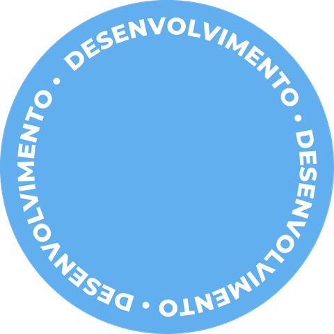
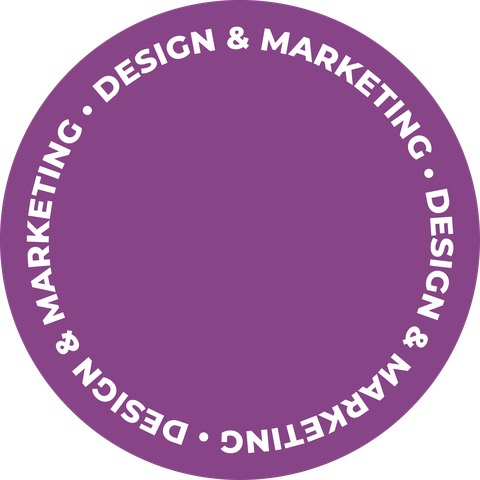
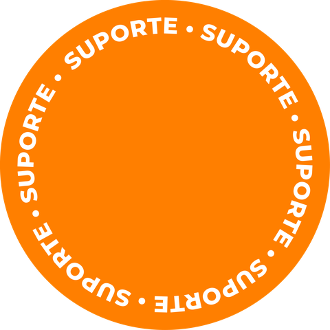
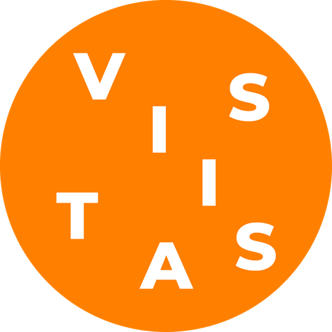
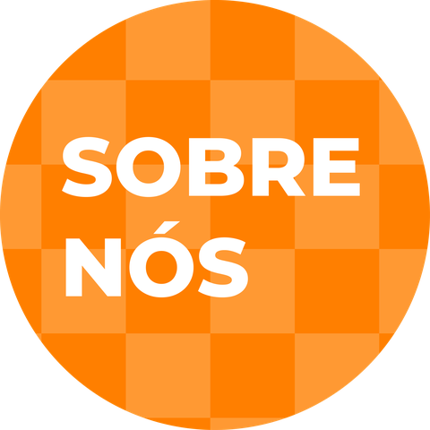
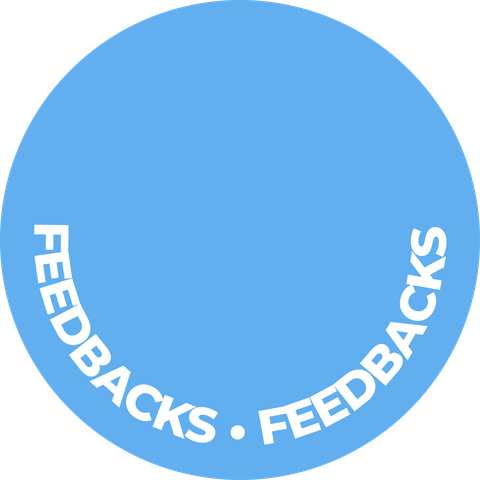
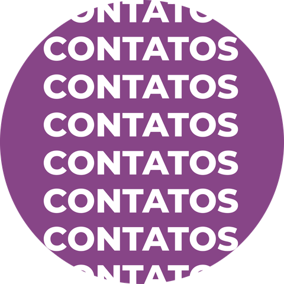

Experiências Profissionais
GWA Informática
Designer01/2026 - atual
Estagiário de Design04/2025 - 12/2025
PagBank
Aprendiz Ux & Product Design04/2023 - 07/2024
Destaques @gwainformatica(proposta)







@gwainformaticainstagram
@vertas.ambientalinstagram
@srvgasinstagram
Experiência Acadêmica
Pós-graduação em UX/UI e Produtos DigitaisEBAC
04/2026em andamento
Bacharel em DesignUSJT
01/202312/2025
Certificados
UX & DesignAlura
FigmaEBAC
BrandingEBAC
Identidade VisualEBAC
Hardskills
- Blender
- Figma
- A. Illustrator
- A. Photoshop
- A. After Effects
Softskills
- Adaptabilidade
- Flexibilidade
- Empatia
- Comunicação
- Pensamento Crítico